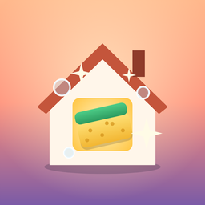

Help and contact for the game on iPhone, iPad, Android and Steam.
Found a bug or have a question? Write to us and we usually reply within 2 working days. Please include your device model.
Sorularınız ve hata bildirimleri için bize e-posta ile yazabilirsiniz: meltembkr@gmail.com. Oyun İngilizce açılır; Türkçe için ana menüdeki veya oyun ekranının üst çubuğundaki EN butonuna dokunun. Sol alttaki Sünger seçiliyken kirin üzerinde sürükleyerek silin; El'e dokunup eşyaları parlayan yerlerine sürükleyin, çöpleri yeşil kovaya atın. Her yenilenen oda bir sonrakini açar; bir ev bitince daha büyüğü açılır. Müziği oyun ekranında sağ üstteki nota simgesinden kapatabilirsiniz. İlerlemeniz yalnızca cihazınızda saklanır. Uygulama içi satın alma yoktur. Telefon ve tablet sürümlerinde odalar arasında ara sıra reklam gösterilir, ekstra altın veya ücretsiz güçlendirici için isteğe bağlı video izleyebilirsiniz; Steam sürümü reklamsızdır. Oyun internetsiz oynanır.